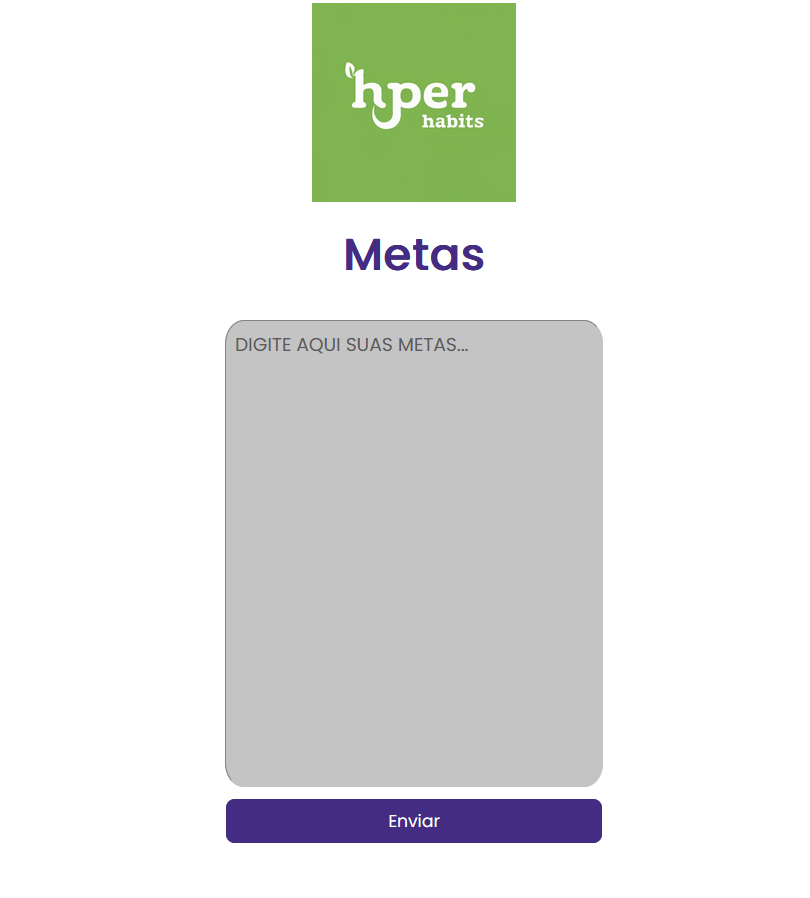
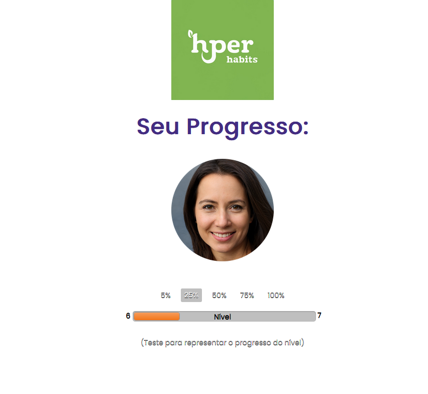

Introdução
Informações Gerais
- Projeto: Hyper Habits
- Repositório GitHub: Grupo 7 Hábitos Saudáveis
- Membros da equipe:
Contexto
Detalhes sobre o espaço de problema, justificativas e os objetivos do projeto.
Problema
Em um mundo cada vez mais acelerado e conectado, muitos indivíduos enfrentam dificuldades em estabelecer e manter hábitos saudáveis consistentes. O sedentarismo, a má alimentação, o sono inadequado e o desequilíbrio na saúde mental têm se tornado problemas recorrentes na sociedade moderna. As consequências desses hábitos negativos vão desde problemas de saúde física, como obesidade e doenças cardíacas, até desafios psicológicos, como estresse e depressão.
Objetivos
Objetivo Geral:
Desenvolver um software, nomeado "Hyper Habits", que ofereça uma solução integrada e eficaz para auxiliar os usuários na criação e manutenção de hábitos saudáveis, abordando a saúde de forma holística e considerando tanto o bem-estar físico quanto o mental.
Objetivos Específicos:
Desenvolver um software, nomeado "Hyper Habits", que ofereça uma solução integrada e eficaz para auxiliar os usuários na criação e manutenção de hábitos saudáveis, abordando a saúde de forma holística e considerando tanto o bem-estar físico quanto o mental. Personalização e Análise de Dados: Desenvolver funcionalidades que permitam aos usuários registrar e monitorar informações relevantes (como alimentação, atividades físicas, sono e saúde mental) e, com base nesses dados, fornecer insights, feedback e sugestões personalizadas para cada perfil. Engajamento e Motivação: Implementar mecanismos de gamificação e elementos motivacionais no software para incentivar a adoção consistente de hábitos saudáveis. Estes mecanismos podem incluir recompensas virtuais, desafios, metas e feedback visual sobre o progresso do usuário. Educação e Suporte: Incorporar recursos educativos dentro da aplicação, como artigos, vídeos e meditações guiadas. O objetivo é fornecer ao usuário informações e ferramentas que o ajudem a tomar decisões informadas sobre sua saúde e bem-estar. Ao atingir estes objetivos específicos, esperamos que o "Hyper Habits" se posicione não apenas como mais um aplicativo de rastreamento de saúde, mas como uma ferramenta abrangente e engajadora que realmente auxilie os usuários em sua jornada de autocuidado e bem-estar.
Justificativa
A decisão de desenvolver o "Hyper Habits" não se deu ao acaso. Vivemos em uma era em que os avanços tecnológicos coexistem com crescentes desafios de saúde. O sedentarismo, o estresse e a má alimentação são epidemias silenciosas que afetam milhões de pessoas globalmente. A motivação primária foi identificar e compreender a lacuna entre a disponibilidade de informações sobre saúde e bem-estar e a aplicação prática dessa informação na vida diária das pessoas. Embora vivamos em uma era de informação, muitas vezes o excesso de dados pode levar à paralisia por análise. Percebemos que havia uma necessidade não apenas de informar, mas de guiar, motivar e acompanhar os indivíduos em sua jornada de saúde.
Público-alvo
O propósito central do "Hyper Habits" é promover uma vida saudável, reconhecendo que cada indivíduo, independentemente de sua idade ou nível de experiência, pode se beneficiar de hábitos mais saudáveis. Em um mundo repleto de informações, nossa missão é proporcionar um guia confiável e adaptável que possa atender desde o jovem ativo, o profissional ocupado, até o idoso proativo. Para o iniciante, que pode estar dando seus primeiros passos em direção a um estilo de vida mais saudável, "Hyper Habits" busca ser um manual amigável e encorajador, ajudando-o a estabelecer metas alcançáveis e a criar uma rotina que ressoe com seu estilo de vida. Para aqueles já experientes, que talvez já tenham uma rotina de exercícios estabelecida ou sigam uma dieta específica, a aplicação oferece ferramentas avançadas de monitoramento, insights e desafios que podem ajudar a otimizar ainda mais seus esforços e resultados. E não importa a idade - sejam jovens buscando otimizar seu desempenho físico, adultos procurando equilibrar saúde e responsabilidades diárias, ou idosos focados em manter a mobilidade e a vitalidade - todos encontrarão suporte em "Hyper Habits". Afinal, a busca por um bem-estar contínuo é universal e transcende gerações. Em resumo, "Hyper Habits" é mais do que apenas uma aplicação; é uma plataforma inclusiva que reconhece a singularidade de cada usuário, enfatizando que hábitos saudáveis são benéficos e acessíveis a todos, em qualquer fase da vida.
Concepção (Design Thinking)
Detalhes do processo de discovery do projeto.
Apresente o processo de discovery do projeto. Com foco na experiência do usuário, esse processo abrange a compreensão do contexto do problema e das características do usuário, a definição do problema, a geração de ideias, a prototipagem e a elaboração de uma proposta de solução
Processo de Design Thinking
O arquivo que se segue apresenta o resultado desse processo.
Apresente o processo de Design Thinking realizado pelo grupo e documentado por meio do software Miro. No documento apresentado, devem ser incluídos: (1) a matriz CSD, (2) o mapa de stakeholders, (3) as personas, (4) as respectivas propostas de valor e (5) o processo de ideação identificando as ideias levantadas e sua priorização.
Especificações do Projeto
Documentação das especificações do projeto.
Apresente as especificações do projeto, incluindo as histórias de usuário e os requisitos funcionais e não funcionais.
Histórias de Usuários
Com base na análise das personas foram identificadas as seguintes histórias de usuários:
Apresente aqui as histórias de usuário que são relevantes para o projeto de sua solução. As Histórias de Usuário consistem em uma ferramenta poderosa para a compreensão e elicitação dos requisitos funcionais e não funcionais da sua aplicação. Se possível, agrupe as histórias de usuário por contexto, para facilitar consultas recorrentes à essa parte do documento.
EU COMO...PERSONA |
QUERO/PRECISO...FUNCIONALIDADE |
PARA...MOTIVO/VALOR |
|---|---|---|
| Usuário novo | Me cadastrar e entrar na aplicação | Ter acesso às funcionalidades do sistema. |
| Usuário | Cadastrar e atualizar meus dados, como peso, altura, sexo,idade e objetivos. | Monitorar e ajustar meu perfil conforme meu progresso e mudanças. |
| Usuário | Estabelecer metas específicas relacionadas à saúde | Ter um direcionamento claro sobre o que quero alcançar. |
| Usuário | Sincronizar com dispositivos wearables | Obter um rastreamento em tempo real das minhas atividades e ter uma visão mais completa do meu dia. |
| Usuário | Registrar atividades diárias, como exercícios, alimentação,sono e consumo de água. | Acompanhar e manter consistência nos meus hábitos saudáveis. |
| Usuário | Cadastrar minhas refeições e receber análises nutricionais | Manter uma dieta equilibrada e saber mais sobre o que estou comendo. |
| Usuário | Visualizar meu progresso através de gráficos, estatísticas e indicadores. | Estar motivado e saber onde preciso melhorar. |
| Usuário | Receber sugestões e planos baseados em meus objetivos e preferências. | Ter um guia personalizado para alcançar meus objetivos. |
| Usuário | Receber lembretes personalizados sobre hábitos saudáveis | Manter consistência e não esquecer das atividades planejadas. |
| Usuário | Acessar informações sobre meditação e ter meditações guiadas e um cronômetro. | Relaxar, focar e cuidar da minha saúde mental. |
| Usuário | Experimentar elementos de gamificação e receber feedback | Estar motivado e engajado na minha jornada de saúde. |
| Usuário | Criar um plano de ação diário/semanal e receber alertas de atividades planejadas. | Organizar melhor minha rotina e seguir um plano estruturado. |
Requisitos
As tabelas que se seguem apresentam os requisitos funcionais e não funcionais que detalham o escopo do projeto.
Com base nas Histórias de Usuário, enumere os requisitos da sua solução. Classifique esses requisitos em dois grupos:
- Requisitos Funcionais (RF): correspondem a uma funcionalidade que deve estar presente na plataforma (ex: cadastro de usuário).
- Requisitos Não Funcionais (RNF): correspondem a uma característica técnica, seja de usabilidade, desempenho, confiabilidade, segurança ou outro (ex: suporte a dispositivos iOS e Android).
Lembre-se que cada requisito deve corresponder à uma e somente uma característica alvo da sua solução. Além disso, certifique-se de que todos os aspectos capturados nas Histórias de Usuário foram cobertos.
Requisitos Funcionais
| ID | Descrição do Requisito | Prioridade |
|---|---|---|
| RF-001 | Permitir que o usuário se cadastre e entre na aplicação. | ALTA |
| RF-002 | Permitir que o usuário cadastre e atualize seus dados como peso, altura, sexo, idade e objetivos. | ALTA |
| RF-003 | Permitir que os usuários estabeleçam metas específicas relacionadas à saúde. | ALTA |
| RF-004 | Registrar as atividades diárias do usuário relacionadas à saúde, como exercícios, alimentação, sono e consumo de água. | ALTA |
| RF-005 | Permitir que os usuários cadastrem suas refeições do dia e forneça uma análise nutricional dos alimentos registrados. | ALTA |
| RF-006 | Mostrar o progresso do usuário em direção às metas através de gráficos, estatísticas e outros indicadores visuais. | ALTA |
| RF-007 | Oferecer sugestões e planos baseados nos objetivos e preferências do usuário. | ALTA |
| RF-008 | Enviar lembretes personalizados para incentivar hábitos saudáveis. | MÉDIA |
| RF-009 | Sincronizar com dispositivos wearables para rastreamento em tempo real de atividades físicas. | MÉDIA |
| RF-010 | Fornecer informações sobre meditação, oferecendo meditações guiadas e um cronômetro integrado. | MÉDIA |
| RF-011 | Incorporar elementos de gamificação e fornecer feedback visual quando o usuário atingir marcos. | MÉDIA |
| RF-012 | Permitir que o usuário crie um plano de ação diário/semanal e receba alertas de atividades planejadas. | MÉDIA |
Requisitos Não-Funcionais
| ID | Descrição do Requisito | Prioridade |
|---|---|---|
| RNF-001 | O sistema deve ser responsivo para rodar em um dispositivos móvel | ALTA |
| RNF-002 | Interface intuitiva para todos os níveis de experiência e idades. | ALTA |
| RNF-003 | Processar requisições em até 2 segundos para uma experiência fluída. | ALTA |
| RNF-004 | Compatibilidade com principais navegadores: Chrome, Firefox, Safari e Edge. | MÉDIA |
| RNF-005 | Código estruturado (HTML, CSS, JavaScript) e bem documentado para futuras atualizações. | MÉDIA |
| RNF-006 | Design estético e consistente, alinhado à identidade visual da "Hyper Habits". | MÉDIA |
Projeto de Interface
Artefatos relacionados com a interface e a interacão do usuário na proposta de solução.
Apresente a ideia de interface que está sendo prevista para o projeto. Inclua os wireframes, o user/screen flow e o protótipo interativo.
User/Screen Flow e Wireframes
Artefatos relacionados com a interface e a interacão do usuário na solução proposta.
Apresente o processo de Design Thinking realizado pelo grupo e documentado por meio do software Miro. No documento apresentado, devem ser incluídos: (1) a matriz CSD, (2) o mapa de stakeholders, (3) as personas, (4) as respectivas propostas de valor e (5) o processo de ideação identificando as ideias levantadas e sua priorização.
Metodologia
Detalhes sobre a organização do grupo e o ferramental empregado.
Nesta parte do documento, você deve apresentar a metodologia adotada pelo grupo, descrevendo o processo de trabalho baseado nas metodologias ágeis, a divisão de papéis e tarefas, as ferramentas empregadas e como foi realizada agestão de configuração do projeto via GitHub.
Coloque detalhes sobre o processo de Design Thinking e a implementação do Framework Scrum seguido pelo grupo. O grupo poderá fazer uso de ferramentas on-line para acompanhar o andamento do projeto, a execução das tarefas e o status de desenvolvimento da solução.
Ferramentas
Relação de ferramentas empregadas pelo grupo durante o projeto.
Liste as ferramentas empregadas no desenvolvimento do projeto, justificando a escolha delas, sempre que possível. Inclua itens como: (1) Editor de código, ferramentas de comunicação, ferramentas de diagramação, plataformas de hospedagem, entre outras.
| Ambiente | Plataforma | Link de Acesso |
|---|---|---|
| Processo de Design Thinking | Miro | https://miro.com/app/board/uXjVMoGB_ps=/ |
| Repositório de código | GitHub | https://github.com/ICEI-PUC-Minas-PMGCC-TI/ti-1-pmg-cc-m-20232-g7-habitos-saudaveis |
| Hospedagem do site | Heroku | https://XXXXXXX.herokuapp.comEXEMPLO |
| User Flow | Miro | https://miro.com/app/board/uXjVMhnFecY=/ |
Gestão do Projeto
Divisão de papéis no grupo.
Apresente a divisão de papéis e tarefas entre os membros do grupo. Informe quem é o Scrum Master, o Product Owner e os desenvolvedores. Informe também quem é o responsável pela documentação do projeto.
Apresente o quadro de gerenciamento do time (Kanban), seu formato e as experiências na utilização dessa ferramenta (GitHub Projects)
Scrum Master - Rafaela Oliveira Ribeiro
Product Owner - Felipe Azevedo Junqueira de Carvalho
Desenvolvedores - Cauã Henrique Corrêa Araujo, Felipe Azevedo Junqueira de Carvalho, Gabriel Praes Bernardes Nunes, Marcelo Henrique de Souza Calixto, Matheus Ramos Carvalhais, Rafaela Oliveira Ribeiro.
Documentação - Felipe Azevedo Junqueira de Carvalho
Controle de Versão
Estrutura do fluxo de trabalho no ambiente do GitHub.
Discuta como a configuração do projeto foi feita na ferramenta de versionamento
(GitHub). Exponha como a gerência de tags, merges, commits e branchs é realizada.
Discuta como a gerência de issues foi realizada.

O grupo adotou uma metodologia de desenvolvimento colaborativo utilizando o GitHub como ferramenta de versionamento central. Cada membro trabalhou de forma independente nas suas respectivas tarefas, utilizando o Visual Studio Code para desenvolver as páginas e realizar commits diretamente para o branch principal do repositório.
Solução
Esta seção apresenta todos os detalhes da solução criada no projeto.
Apresente cada uma das funcionalidades que a aplicação fornece tanto para os usuários quanto aos administradores da solução.
Inclua, para cada funcionalidade, itens como: (1) titulos e descrição da funcionalidade; (2) Estrutura de dados associada; (3) o detalhe sobre as instruções de acesso e uso.
Video do Projeto
O vídeo a seguir traz uma apresentação do problema que a equipe está tratando e a proposta de solução.
O video de apresentação é voltado para que o público externo possa conhecer a solução. O formato é livre, sendo importante que seja apresentado o problema e a solução numa linguagem descomplicada e direta.
Utilize o recurso de compartilhamento via embed e inclua o vídeo logo abaixo.
...... COLOQUE AQUI O SEU VIDEO ......
Funcionalidades
Esta seção apresenta as funcionalidades da solução.
Apresente cada uma das funcionalidades que a aplicação fornece tanto para os usuários quanto aos administradores da solução.
Inclua, para cada funcionalidade, itens como: (1) titulos e descrição da funcionalidade; (2) Estrutura de dados associada; (3) o detalhe sobre as instruções de acesso e uso.
Funcionalidade 1 - Cadastro de Atividade Semanal
Permite a inclusão e leitura das atividades semanais para o sistema
- Estrutura de dados: Atividades
- Instruções de acesso:
- Abra o site e efetue o login
- Acesse o menu principal e escolha a opção Atividade Semanal
- Adicione o nome da Atividade, a Duração e a Descrição se for necessario.

Funcionalidade 2 - Cadastro de Alimentos
Permite a inclusão, leitura, alteração e exclusão de alimentos para o sistema
- Estrutura de dados: Alimentos
- Instruções de acesso:
- Abra o site e efetue o login
- Acesse o menu principal e escolha a opção Cadastro de Alimentos
- Em seguida, escreva o nome do alimento, indique a quantidade e em qual refeição será adicionado

Funcionalidade 3 - Cadastro de Planejamento de Dieta
Permite a inclusão de dietas para o sistema
- Estrutura de dados: Dietas
- Instruções de acesso:
- Abra o site e efetue o login
- Acesse o menu principal e escolha a opção Dieta
- Em seguida, Digite o planejamento semanal alimentar

Funcionalidade 4 - Lista de Alimentos
Permite a leitura de alimentos no banco de dados
- Estrutura de dados: Alimentos
- Instruções de acesso:
- Abra o site e efetue o login
- Acesse o menu principal e escolha a opção Lista de Alimentos
- Em seguida, pesquise o alimentos desejado

Funcionalidade 5 - Cadastro de Medidas
Permite a inclusão de medidas para o sistema
- Estrutura de dados: Medidas
- Instruções de acesso:
- Abra o site e efetue o login
- Acesse o menu principal e escolha a opção Medidas
- Em seguida, informe o peso, altura, sexo e idade

Funcionalidade 6 - Cadastro de Metas
Permite a inclusão de metas para o sistema
- Estrutura de dados: Metas
- Instruções de acesso:
- Abra o site e efetue o login
- Acesse o menu principal e escolha a opção Metas
- Em seguida, informe as metas esperadas pelo usuário

Funcionalidade 7 - Visualização de Progresso
Permite a visualização do progresso do usuário
- Instruções de acesso:
- Abra o site e efetue o login
- Acesse o menu principal e escolha a opção Progresso

Estruturas de Dados
Descrição das estruturas de dados utilizadas na solução com exemplos no formato JSON.
Apresente as estruturas de dados utilizadas na solução tanto para dados utilizados na essência da aplicação quanto outras estruturas que foram criadas para algum tipo de configuração
Nomeie a estrutura, coloque uma descrição sucinta e apresente um exemplo em formato JSON.
Estrutura de Dados - Atividades
Atividades semanais do usuário
{
"id": 1,
"exercico": "Corrida",
"duracao": "1h",
"descricao": "Corrida no Parque Mangabeiras"
}
Estrutura de Dados - Alimentos
Alimentos registrados que podem ser utilizados pelo usuário
{
"id": 3,
"nome": "Salmão",
"categoria": "Peixes",
"CaloriaPor100g": 206
}
Estrutura de Dados - Dietas
Plano alimentar semanal do usuário
{
"id": 1,
"dieta": "200g arroz integral 100g feijão 150 frango grelhado"
}
Estrutura de Dados - Medidas
Registro das medidas do usuário
{
id: "56"
peso: "90"
altura: "180"
sexo: "M"
idade: "21"
}
Estrutura de Dados - Metas
Registro das metas do usuário
{
"id": 2,
"metas": "Emagrecer 12 kilos ate o fim do ano e melhorar meu sono"
}
Módulos e APIs
Esta seção apresenta os módulos e APIs utilizados na solução.
Apresente os módulos e APIs utilizados no desenvolvimento da solução. Inclua itens como: (1) Frameworks, bibliotecas, módulos, etc. utilizados no desenvolvimento da solução; (2) APIs utilizadas para acesso a dados, serviços, etc.
Images:
- ThisPersonDoesNotExist - https://thispersondoesnotexist.com/
Fonts:
- Google Fonts - https://fonts.googleapis.com
Scripts:
- jQuery - http://www.jquery.com/
- Bootstrap 4 - http://getbootstrap.com/
FAQ
Perguntas e respostas comuns associadas ao projeto.
Apresente uma lista de perguntas e respostas comuns associadas ao projeto. Inclua perguntas como: (1) detalhes de acesso e uso do projeto; (2) informações sobre a instalação e configuração da aplicação; (3) questões sobre a manutenção da aplicação; (4) detalhes sobre a integração da aplicação com outros sistemas; (5) questões sobre a segurança da aplicação.
Referências Bibliográficas
Esta seção apresenta as referências bibliográficas utilizadas no projeto.
Apresente as referências bibliográficas utilizadas no projeto. Inclua itens como: (1) livros, artigos, tutoriais, etc. utilizados no desenvolvimento da solução; (2) links para sites, blogs, etc. utilizados no desenvolvimento da solução.
https://www.mundoboaforma.com.br/
https://www.health.harvard.edu/blog
https://www.tuasaude.com/
https://menteecorpoforte.com.br/
Tutoriais
https://www.youtube.com/
https://github.com/
https://miro.com/
https://www.figma.com/